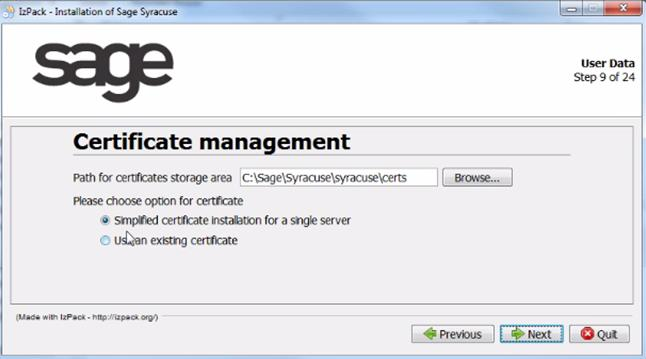
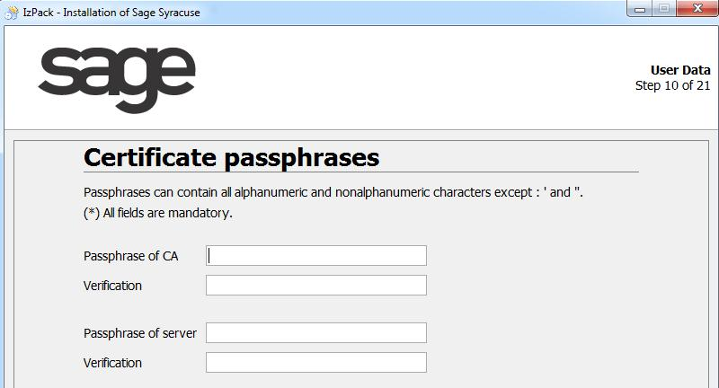
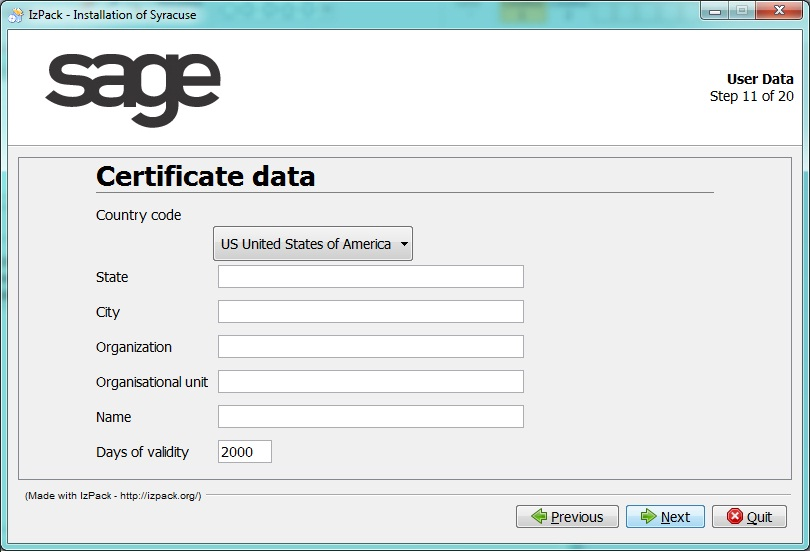

Certificate installation_7.0
The trusted connection between node servers and Sage X3 servers is based on signed certificates. This document explains how the certificates must be set up and installed, and includes the following sections:
Introduction about certificates
What is a public key, a private key, a certificate, and a passphrase?
In normal cryptography, anyone who encrypts something can also decrypt it because the same key is used for both encryption and decryption.
In public key cryptography there is:
- A public key, which can be distributed to many people.
A private key, which should be kept private.
A similar process is used for digital signatures to secure some data. For this purpose, you can compute the digital signature (some kind of encrypted summary) of the data using the private key. Anyone who has the public key can verify the digital signature of the data and thus make sure that the data has not been changed. It is almost impossible to change the data without changing the signature, and to compute a valid signature of some data without the private key.
The private key is very sensitive and usually encrypted using a passphrase (similar to a password, but complex). You can use the private key only if you know the passphrase.
A certificate is like a bundle of a public key with additional data and a digital signature. There are always two parties involved: a subject and an issuer.
- The subject (a person or organization) provides the public key and most of the additional data.
The issuer essentially seals the data with a digital signature.
A certificate is a file that contains information about the issuer and the subject of the certificate, an expiration date, the subject's public key, and the issuer's digital signature to verify that the certificate is not fake (you need the issuer's certificate or public key to verify it). When you use a certificate, you should trust the issuer of the certificate.
When you have the certificate, you can verify that the subject of the certificate has the corresponding private key.
This schema summarizes the components that are set up for a certificate management:

How do certificates operate?
Certificates are managed as follows:
Master certificate
In the first step, a master certificate or "CA certificate" is created. This master certificate is used as a "certification authority" (the issuer and subject are the same). It identifies a domain of trust for your company or organization.
For a strong security, this certificate should be generated on a secured server, and the private key MUST NOT BE TRANSFERRED anywhere. However, the master certificate will be transferred on different node.js servers as illustrated on the following schema:

In this schema, the number (1) means that only one master certificate exists, and the corresponding private key is kept safe on a master secured server, while the certificate is distributed on every node.js server.
node.js certificate
The second step is to create a private and public key, and a certificate for every node.js server. They are generated using the master certificate and master private key, thus the issuer is the above "certification authority" and the subject is the node.js server. This step secures the connections to Sage X3 and may also secure connections between node.js servers. Every time a connection request is sent from a node.js server to a Sage X3 server, encrypted data is sent. The Sage X3 server is able, by using the public key, to identify the server that connects to it, and ensures the authentication. This is why we have as many certificates as node.js servers. This information corresponds to the following schema:

In this schema, the letter (N) means that there are as many certificates and private keys as node.js servers. The private key and certificate will remain on the node.js server, while the public key will be distributed to the Sage X3 servers that will receive a connection from the corresponding node.js server. Note that the Sage X3 servers will only get the public key, without the certificate itself (which also contains the same public key and some other information), or the private key.
Simplified certificate procedure
Why is a complete automation impossible?
For security reasons, it is impossible to completely automate the generation and distribution of certificates and keys because each server needs some trusted piece of information to check and trust another server. However, there is a simplified method where the installation can be automated. If a unique node.js server is present on the network, the generation of the CA certificate and the unique node.js certificate can be done in a completely automated method by the installation procedure. In addition, if the Sage X3 server is located on the same physical server, you can directly copy the key in Sage X3.
Using the simplified procedure
The simplified procedure has been created to handle all cases where a unique node.js server is installed on the network.
- This server also generates the CA certificate and private key.
- The node.js certificate and public and private keys are also generated on this same server.
- If an additional check box is selected that communicates that the Sage X3 server is located on a server accessible through the network, the public key is copied automatically. Otherwise, the transfer will have to be done manually after running the procedure.
If you want a separate server that creates certificates in a secured environment, you need to run the complete generation procedure.
The simplified generation key procedure
The key generation procedure is included within the software installation procedure. This section describes the installation steps involved with the key generation. The following screens have been shrunk to display only the useful information.
The first step regarding the key generation starts on step 9 of 18. The following screen appears:

The following information is provided:
- The path where the certificate is stored for the server certificate.
- The "Simplified certificate installation" check box is selected to use this procedure.
If the check box is selected, the following screen appears:

This screen requires you to enter a passphrase for the private key of the certification authority and another passphrase for the server certificate. A passphrase is the equivalent of a password that must be long and where digits, upper case, lower case, and special characters should be mixed to ensure maximum security. You should memorize these passphrases because it will be impossible to recover them.
Both passphrases must be entered twice.
The next two screens require information about the issuer of certificates. They both need the same information to be entered.
- The first screen requires the information for the CA certificate.
- The second screen requires the information for the server certificate.
The screens are similar to the following screen:

The data required for a certificate are: the country and state (if necessary), city, organization, service, name, and validity duration in days. Note that when the duration expires, you will have to recreate the different certificates and distribute them. For this reason, you have to choose the best compromise between security (everlasting certificate is not very secured) and convenience (recreating and deploying certificates will be done with the manual procedure).
The data entered for the CA certificate can be different from the data for the server certificate. The details for the CA certificate should identify the global organization that you have to trust when you create new certificates. For example, it can be your company or the group it belongs to if the certificate delivery is done for several node.js instances. The details of the server certificate can be related to a local suborganization that handles the node.js server.
The next screen associated with the certificate generation is the following:
In this screen, you define the folder where the certificate generation tool is installed. You can change the default path. This path is used to manually generate other certificates in a later step.
This screen also includes a check box to specify a local Sage X3 runtime if there is one. This happens if a unique physical server hosts the node.js server and the Sage X3 runtime. When this check box is selected, the following screen appears:
The runtime path must be provided, and automatically copies the public key into the correct folder.
If the "Specify an X3 Runtime path and install certificates" check box is cleared, a warning message appears informing you to copy the public key at a later time.
Final step
The next installation procedure screens are not related to the key generation.
When these steps are completed, the system is ready to be used. The additional steps related to certificate in simplified procedure no longer exist.
Complete generation procedure
If the simplified generation procedure is not selected, you have to manually create and install the certificates and public and private keys to ensure a secured connection between the different servers. This chapter describes the procedure.
Generating certificates
You need a computer to generate certificates which are used for secured communication and authentication of the servers. These certificates and private keys contain sensitive data; therefore, this computer should be secured without Internet access, if possible. It is not necessary that this physical computer belongs to the node.js cluster.
To do this, you need to copy the contents of the folder bin/cert_gen (at least the following files: bcpkix-jdk15on-150.jar, bcprov-jdk15on-150.jar, certgen.jar, and certgen.bat) of an arbitrary node.js installation into one folder of the file system for this computer.
Java 7 must be installed on that computer, and Java must be in the search path for executables.
To generate the certificates, you may invoke on the command line (within that folder)java -jar certgen.jar. Under Microsoft Windows, click certgen.bat, which invokes this command line. The user who executes the program must have write access to the folder and subfolders. The program creates subfolders private (for the private key of the generated certificate authority) and output (for all other certificates, server private keys, and public keys).
When you run the program for the first time, it creates these subfolders and asks for data of the generated certificate authority which is used to sign all server certificates. After that, you can create an arbitrary number of certificates.
There must be a certificate for each server in which node.js runs. The name must be the hostname of the node.js server. It must be the same as the output of the hostname command on that server, and it is automatically converted to lowercase. The program asks you for the server name of the TCP connections. This must be the server name or IP address in which this server can be reached by TCP from all other node.js servers (for example, hostname with domain).
If you generate the certificates on a computer which has network connection to the node.js servers, you may also automatically transfer the certificates if you have already copied the CA certificate to each server.
For a complete list of program options, see the appendix
section.
At the end, the output subfolder will contain the following files:
- ca.cacrt, the certificate of the generated certification authority.
- The following three files for each server. The name is always the hostname of the server (in lowercase):
* The file with extension .crt contains the certificate of that server.
* The file with extension .key contains the private key for this server.
* The file with extension .pem contains the corresponding public key which is used by Sage X3 servers for communication with this server. Note that in the name of the .pem file, the characters $, ., and @ have been replaced with _.
Distribution of certificates to node.js servers
The setup has created a folder for certificates on each server. Within this folder, there is a subfolder whose name is the server name. Under Unix, only the subfolder where the node.js process runs is accessible by the user. Copy the files ca.cacrt into this subfolder.
If you do not want to transfer the certificate, private key, and passphrase using the certificate generation tool, you must also copy manually the files with extensions .key and .crt, whose name is the server name, into this subfolder. Moreover, the passphrase must be set. In the node.js installation folder, you can find the batch file passphrase.cmd or the shell script passphrase.sh which can set the passphrase. You must invoke this file with one parameter (the passphrase of the private key) on the command line. This sets and encrypts the passphrase, and checks the certificate and private key. The encryption of the passphrase depends on the computer and the operating system user. Therefore, the command writes the passphrase for the user in which the node.js process runs.
You can check your settings by invoking the passphrase file with the special parameter -check. This does not set a passphrase, but only reports the integrity of the certificate and private key.
Remark: You cannot set the value -check as a passphrase for a server key. A passphrase must include at least four characters.
The passphrase command automatically contacts the node.js server to update its configuration so that you do not have to restart the node.js server.
When everything is OK, you can start the administration application. In the Hosts entity, make sure that all hosts have the status OK and the security check box is selected.
Distribution of public keys to the Sage X3 server
Each node.js server has to authenticate against each Sage X3 server it invokes. You have two options:
-
For the x3server entity with some certificates declared. This must be a certificate with a private key and must not be any of the previously manually installed internal certificates for node.js servers. You can also generate this new certificate by using the certificate generation tool and install it on all node.js servers by adding a new instance of the certificate entity. You must copy the public key file (with extension
.pem) for this certificate into thekeyssubfolder of the Sage X3 runtime. Note that the characters$,., and@in the certificate name is replaced with_.
For example: When the name of the instance of the certificate entity istest.test, there must be a filetest_test.pemin thekeysdirectory. -
For the x3server entity with no certificates declared. The manually installed server certificate of this node.js server is used. This means that you must copy all public keys of the node.js servers (all
.pemfiles of the output folder of the certificate generation tool) into thekeyssubfolder of the Sage X3 runtime. When you add a node.js server later on, you also must copy its public key (the.pemfile) into thekeyssubfolder of all Sage X3 runtimes. Note that in the.pemfile, the characters$,., and@of the hostname are replaced with_to build the name of the.pemfile. For example: For the serverABC.DEF.GHI, the file will beabc_def_ghi.pem.
Let's just illustrate this last option by using an example where you have two node servers (A and B), and two Sage X3 servers (1 and 2). If you want the Sage X3 server 1 to accept connections from both node.js servers (A and B), and Sage X3 server 2 to accept connections only from node.js server A, the deployment policy is summarized in the following table, where:
- Yes means the file must be installed.
- Yes/Transfer means the file must be installed unless you use the certificate generation tool to transfer this data.
- No means the file must not be installed.
- Never means installing the corresponding file would create a critical security breach.
- Generated means the file is generated there and should remain for certificate evolution purposes only.
- Available means the file is generated there and must remain there.
| Type of file | Installed on | ||||
|---|---|---|---|---|---|
| Secured CA server | node.js server A | node server B | Sage X3 server 1 | Sage X3 server 2 | |
| CA certificate | available | yes | yes | no | no |
| CA private key | available | never | never | never | never |
| Certificate for server A | generated | yes/transfer | no | no | no |
| Server A private key | generated | yes/transfer | never | never | never |
| Server A public key | generated | no | no | yes | yes |
| Certificate for server B | generated | no | yes/transfer | no | no |
| Server B private key | generated | never | yes/transfer | never | never |
| Server B public key | generated | no | no | yes | no |
Appendix: Detailed generation procedure
Certificates, private keys, and their passphrases are sensitive data which are important for securing connections and for signing documents. Therefore, they will not be stored in the database but placed as files in the local file system in a folder with limited access rights. The encrypted passphrases will be added to another file in the same folder.
There will be a system of customer generated certificates and private keys which will ensure that the servers are able to trust each other, and be trustworthy to the Sage X3 runtime. These certificates will be signed using a customer generated certification authority. The node.js servers will have the certificate and the private key, while the Sage X3 runtime will have only the certificates of the servers calling the Sage X3 runtime. In the future, only the certificate of the customer generated certification authority may be added to the Sage X3 runtime so that it has to verify the certificates of the node.js servers.
At the customer site, the administrator generates a private key and a self-signed certificate which acts as a certification authority. For each server in the cluster, a certificate and a private key is generated in such a way that the certificate can act as a server certificate for HTTPS. The certificates are signed using the previously generated self-signed certificate.
Generating certificates
For this purpose, the administrator uses a command line tool. The tool is independent from the node.js installation folders, and should run on a different computer. You should copy all contents of the cert_gen subfolder of the customer image into an empty folder.
A Java runtime (Java version 7 and above) must be available on the computer and in the search path for binaries.
On a Microsoft Windows operating system, you can invoke certgen.bat without opening a command line to start the tool without command line parameters. You can also add command line parameters to certgen.bat.
Otherwise, you can invoke java -jar certgen.jar and add command line parameters.
The application creates two subfolders private and output (see "First Invocation" below). After generation, the CA certificate, the server certificate, and the corresponding private key must be manually copied to each server that runs the 'node.js' processes. The server certificates must be copied to servers having the Sage X3 runtime with the help of the administration GUI. It can be used for several actions within one interactive session (where the passphrase of the CA private key is re-used).
The following is a list of possible use cases for the tool:
- The tool can be invoked with and without command line parameters, and will fetch the missing data from the console unless the
-batchswitch is set. - When the
-batchswitch is set, there is no input from the console and an error appears when data is missing. This switch is recommended when you use the tool within batch files. - You can generate the certificate, public key, and private key files and copy them manually to the node.js servers. This is the most secure option because you can generate the certificates on a computer that is not part of any network. If there is a network connection from the computer in which the tool runs to the node.js servers, it may be easier. The tool can transfer the server's certificate, private key, and passphrase to a node.js server using HTTP requests with encrypted data (it uses the certificate's subject's common name as the address which is entered as the server name for TCP connections; no HTTPS is possible). To use this, the CA certificate must have been manually copied to the node.js servers because the node.js servers need it to check whether they can trust the data. If you do not want to do this, you can add a
-notransferswitch to the invocation of the tool to switch off all transfer options. When node.js cannot be reached, the tool stops with an error message. When the-waitoption is set together with a positive number (for example,-wait 20), the tool will try numerous times to connect to this port for this number of seconds. When you specify the-portswitch together with a positive number (for example,-port 8124), the tool will transfer the data to the node.js server even in batch mode.
First Invocation
When the tool is started for the first time, it creates two folders:
- An
outputfolder for the generated server certificates, their private keys, and the CA certificate. - A
privatefolder for the CA private key.
This separation reduces the risk of copying the CA private key unintentionally. The tool will not store passphrases anywhere.
The tool also generates the certificate and private key of the certification authority; all other actions are rejected. For this, it needs:
* The distinguished name of the subject of the CA certificate either interactively or behind the command line parameter -dn. The distinguished name must obey the AVA format for distinguished names according to http://www.ietf.org/rfc/rfc4514.txt.
* The passphrase of the CA private key either interactively or behind the command line parameter -capass.
* The number of days which the certificate should be valid, starting from the current time; either interactively or behind the command line parameter -days.
* Optionally, the port of the node.js server to which the server certificate should be transferred through encrypted HTTP requests (either interactively by entering a positive port number) or behind the command line parameter -port. This only works when the server already has the CA certificate.
When the CA certificate is available, the user can perform the following actions. When the corresponding command line parameter is not given, the action will be asked interactively. Note that the CA passphrase will only be prompted once when you do several actions within one session of the program.
Create a new server certificate (command line parameter -create)
This action requires the following:
* The computer name of the server interactively or as a last command line parameter.
* The passphrase of the private key for the server certificate interactively or behind a -pass parameter.
* The passphrase of the private key for the CA certificate interactively or behind a -capass parameter.
* The server name as it should be used from other servers in TCP connections either interactively or as a common name of a distinguished name behind the -dn parameter, or as a value behind the -cn parameter. The default value is the computer name. The other parts of the distinguished name will be used from the CA certificate unless the -dn parameter is given.
* The number of days which the certificate should be valid, starting from the current time; either interactively or behind the command line parameter -days, default being the validity of the CA certificate.
Remark: Unless the -notransfer switch is set, you are prompted for the port of a node.js server. Only if you enter a valid positive port number, the data is transferred to that server using encrypted HTTP requests.
Renew the validity of the certificate (command line parameter -renew-cert)
This action generates a new certificate with the same subject, but different validity.
This requires the following:
* The computer name of the server interactively or as a last command line parameter.
* The passphrase of the private key for the CA certificate interactively or behind a -capass parameter.
* The number of validity days of the certificate, starting from the current time either interactively or behind the command line parameter -days, default being the current validity of the certificate.
Remark: Unless the -notransfer switch is set, you are prompted for the port of the node.js server. Only if you enter a valid positive port number, the data is transferred to that server using encrypted HTTP requests.
Renew the validity of all certificates (command line parameter -renew-all-certs)
This action changes, in a single action, the validity of the CA certificate and all server certificates to the given date. This requires the following:
* The passphrase of the private key for the CA certificate interactively or behind a -capass parameter.
* The number of validity days of the certificate, starting from the current time either interactively or behind the command line parameter -days, default being the current validity of the certificate.
Remark: Unless the -notransfer switch is set, you are prompted for all ports of node.js servers one after another. Only if you enter a valid positive port number, the data is transferred to that server including the new CA certificate. This does not work in batch mode.
Generate a new private key (command line parameter -renew-key)
This action generates a new pair of public and private keys as well as a new certificate with the same subject and validity, but containing the new public key. When this is applied to the CA certificate, it automatically signs all server certificates with the new key. This requires the following:
* The computer name of the server or an empty name for the CA certificate interactively or as a last command line parameter.
* The passphrase of the new private key interactively or behind a -pass parameter; when the CA certificate key is changed, the -capass parameter should be used instead.
* For server certificates only, the passphrase of the existing private key for the CA certificate interactively or behind a -capass parameter.
Remark: Unless the -notransfer switch is set, you are prompted for the port of a node.js server. Only if you enter a valid positive port number, the data is transferred to that server using encrypted HTTP requests. When you change the key of the CA certificate, you are prompted for all ports of node.js servers one after another. Only if you enter a valid positive port number, the data is transferred to that server including the new CA certificate. This does not work in batch mode.
Change the subject of the certificate (command line parameter -change-name)
This action changes the subject of the certificate without changing the validity. If applied to the CA certificate, it changes the issuer of all CA certificates and signs them again. When the subject of the certificate is identical to the issuer (except for the common name), the subject (except for the common name) is also changed.
Example: The CA certificate has a distinguished name C=de,ST=bw,L=vs,O=xx,OU=mm,CN=ca which is changed to C=uu,ST=vv,L=ww,O=xx,OU=yy,CN=zz. Then the subject C=de,ST=bw,L=vs,O=xx,OU=mm,CN=server1 is changed to C=uu,ST=vv,L=ww,O=xx,OU=yy,CN=server1. However, the subject C=ab,ST=cd,L=ef,O=gh,OU=ij,CN=kl remains unchanged.
This requires the following:
* The computer name of the server or an empty name for the CA certificate interactively or as a last command line parameter.
* The passphrase of the private key for the CA certificate interactively or behind a -capass parameter.
* The number of validity days of the certificate, starting from the current time; either interactively or behind the command line parameter -days, default being the current validity of the certificate.
* The new distinguished name of the subject. You can enter this interactively (with the old name being the default), use the parameter -cn to set a new common name, or -dn to set a new distinguished name (the distinguished name must obey the AVA format for distinguished names according to http://www.ietf.org/rfc/rfc4514.txt). For server certificates, you are only prompted for the new common name (name of the server as used in TCP connections), and for the CA certificate you are prompted for all parts of the common name.
Remark: Unless the -notransfer switch is set, you are prompted for the port of a node.js server. Only if you enter a valid positive port number, the data is transferred to that server. When you change the key of the CA certificate, you are prompted for all ports of node.js servers one after each other. Only if you enter a valid positive port number, the data is transferred to that server including the new CA certificate. This does not work in batch mode.
Show contents of the certificate (command line parameter -show)
This action shows the subject and issuer distinguished names and the start and end date of the validity for the certificate. This requires the following:
* The computer name of the server or an empty name for the CA certificate interactively or as a last command line parameter.
Show contents of all certificates (command line parameter -show-all)
This action will show the subject and issuer distinguished names and the start and end date of the validity for all certificates. This does not require any further data.
Delete data for a server (command line parameter -delete)
This action deletes the certificate, public key file (for the Sage X3 server), and the private key file from the output directory. The CA certificate cannot be deleted in this manner. This requires the following:
* The computer name of the server interactively or as a last command line parameter.
Transfer certificate and private key (command line parameter -transfer)
This action is only shown when the -notransfer switch is not set. It transfers the certificate, private key, and passphrase of a node.js server to another node.js server (provided these files are in the output folder). This requires the following:
* The computer name of the server or an empty name for the CA certificate interactively or as a last command line parameter.
* The passphrase of the private key for the server certificate interactively or behind a -pass parameter.
* The passphrase of the private key for the CA certificate interactively or behind a -capass parameter.
* The port of the node.js server interactively or behind a -port parameter.
Set the passphrase for the private key on a node.js server
This is only necessary when you do not use the certificate generation tool to transfer the passphrase. This is done by using the passphrase.cmd batch file or passphrase.sh shell script (as described above in "Distribution of certificates to node.js servers"). This encrypts the password of the generated private key on the server and is dependent on the user (for example, on MS Windows using CryptProtectData). When it is invoked without further parameters, it checks the validity of the certificates. Otherwise, it sets and encrypts the passphrase.
Details about the encrypted transfer of certificate data
The certificate generation tool makes two requests to the node.js server:
* The first one is for a Diffie-Hellman key exchange.
* The second one transfers the data that has been encrypted with the common secret Diffie-Hellman key and signed with the private CA key.
The certificate generation tool will authenticate using the private CA key, while the node.js server authentication task is performed according to the public CA key. This key that should be reachable via the server name that figures in the server certificate as subject common name.
Structure of the certificate folder
The setup generates a special folder for certificates and keys, and writes its path to the 'nodelocal.js' file.
In the certificate folder, there is a subfolder with the computer name in lower case (both folders are generated by the setup if they do not already exist); containing the following files (assuming the server name is foo in lower case):
- ca.cacrt: Certificate of the generated certification authority (maybe other certificates of certification authorities with extension .cacrt).
- foo.crt: Certificate of the server (maybe other certificates with extension .crt).
- foo.key: Private key file of the server (maybe other private key files with extension .key).
- foo.pwd: File with encrypted pass phrases for all private keys of that server.
Remark: Within the certificate directory, the subfolder is intended to avoid problems when the administrator chooses to install all the above mentioned files on a network drive, and therefore certificates of different servers have to be stored within the same folder. Furthermore, this situation is of no risks as access rights to the subfolder and its files are restricted to the operating system user account under which the node.js processes will run.
Certificate entity
There is an entity for certificates and an entity for CA certificates which contain the metadata for the certificates and private keys:
- A logical name consisting of lower case letters, underscore, and dot. Acting as a key value which will be the computer name for the administrator generated server certificates, and private keys and ca for the administrator generated certification authority.
- A marker if the certificate is administrator generated, has been manually installed at setup time, and therefore cannot be changed using the GUI.
- A checksum of the certificate which is not for the administrator generated certificates to ensure integrity (hidden field).
- Validity of the certificates.
- Distinguished names of issuer and subject.
Both entities contain an upload field for the certificate, yet only the checksum of the certificate will be stored in the database.
The certificate entity also contains:
* A flag if a private key has been uploaded for that certificate.
* An upload field for the private key.
* An input field for the pass phrase that will not be stored in the database.
Some certificates are only useful for one server (for example, SSL server certificate). The corresponding instance of the host entity is placed as a related instance to the certificate instance. When there is no instance, the certificate is stored on all hosts and is transferred at startup to servers where the certificate is missing (for example, servers added to the cluster).
The fields for the certificate, the private key, and the passphrase are input fields only. However, you can update just the certificate and leave the private key unchanged. The following consistency checks will be done:
- Certificate and private key have correct PEM format.
- Passphrase fits the private key.
- Certificate fits the private key. The check is done on a server which has all the data, not only the data that have been entered on the screen. Therefore, the check also works when the user uploads only a certificate since the private key has already been uploaded.
The instances of the certificate entity and the CA certificate entity, which correspond to the administrator generated certificates, are marked as read-only.